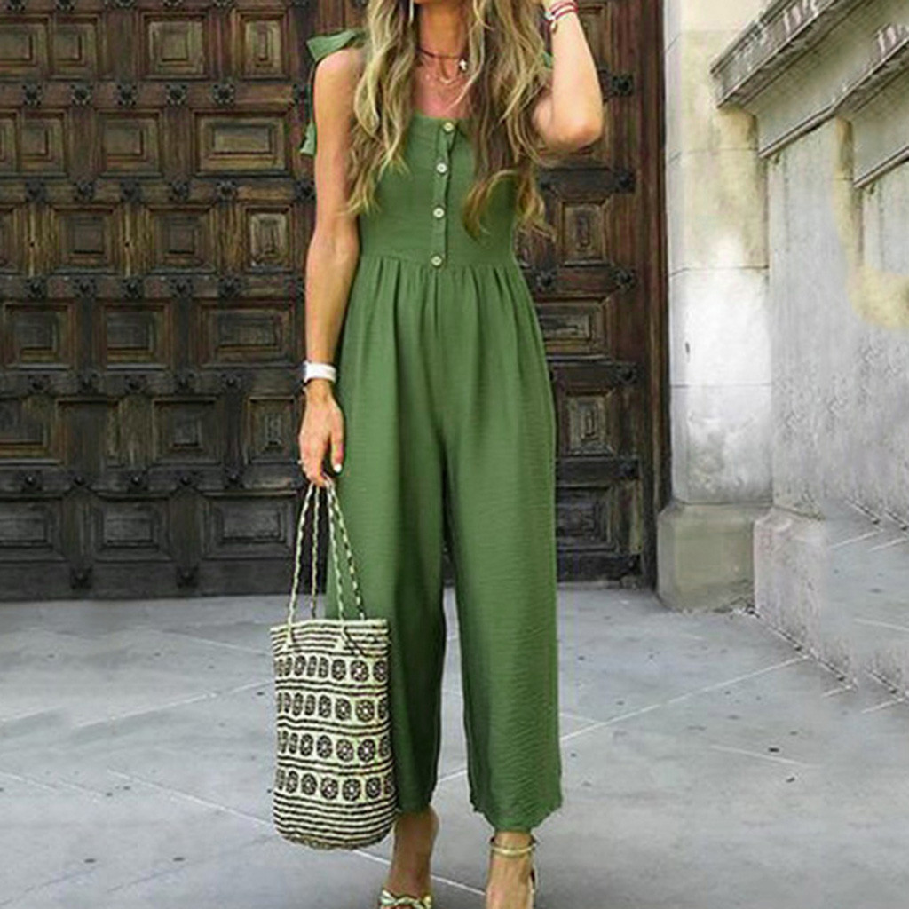
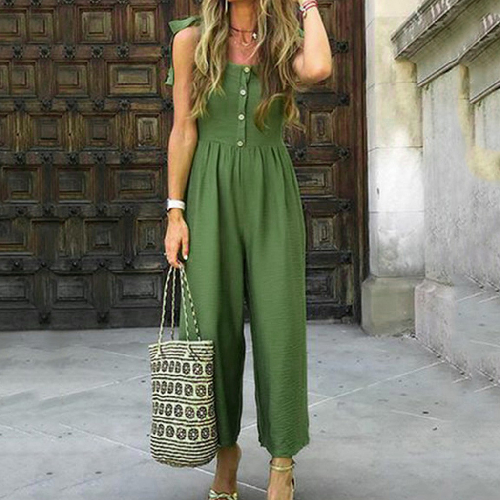

Home Summer Winter Fall Spring About Me!
April showers bring mayflowers! Here in spring, it's all about pastels, flowers, and all thing bea-YOUtiful. Spring has some of the prettiest styles, and you'll surely find some sort of inspiration! Let's get glam!
For spring you literally can wear almost any style because spring is just that awesome. I like florals, plaids, and solids. For spring, the most flattering color palette is pastels. Mini, lacy, floral,and satin dresses are my favorite


anything you want!
 AMAZON jumper

AMAZON jumper

Cargo pants and jeans are great! Paper bag pants and shorts look super trendy. You can had a bandana and chain for a good add-on. Any type of skirt is cute. Honestly, in spring, any bottom is a cute one! < /p>
Same as above, literally anything! For styles and trends however,pastels, poofy blouses, and simple tanks look great
Finally, SHOES the statement piece of all outfits. You honestly can't go wrong with these! I like a good statement kitten heel, or flat sandal. Birkenstock and Lulus have great choices.